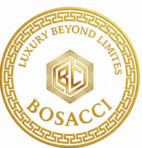

Trade Mark Journal No.2025/050 12 December 2025
UK00004275302 9 October 2025 (14,25,35)

- Class 14
- Shoe jewellery; Shoe jewelry; Items of jewellery; Jewellery items; Leather jewelry boxes; Fitted jewelry pouches; Wristlets [jewellery]; Jewellery boxes; Plastic costume jewellery; Jewellery, including imitation jewellery and plastic jewellery; Jewellery products; Bracelets [jewellery]; Fashion jewellery; Trinkets [jewellery]; Jewelry boxes; Necklaces [jewellery]; Jewellery; Semi-finished articles of precious stones for use in the manufacture of jewellery; Semi-finished articles of precious metals for use in the manufacture of jewellery; Decorative articles [trinkets or jewellery] for personal use; Jewellery made of semi-precious materials; Clothing ornaments of precious metals; Trinkets [jewellery, jewelry (Am.)]; Jewellery boxes of precious metals; Articles of imitation jewellery; Jewellery in semi-precious metals; Articles of jewellery with ornamental stones; Jewellery for personal adornment; Ornaments for clothing [of precious metal]; Jewellery being articles of precious stones; Articles of jewellery with precious stones; Jewellery chain of precious metal for bracelets; Imitation jewellery ornaments; Jewelry boxes of precious metals; Synthetic stones [jewellery]; Plastic bracelets in the nature of jewelry; Jewellery boxes of precious metal; Jewellery being articles of precious metals; Chains [jewellery, jewelry (Am.)]; Trinkets [jewelry]; Identification bracelets of precious metal [jewelry]; Jewelry; Ornaments [jewellery, jewelry (Am.)]; Jewellery chain of precious metal for necklaces; Ornaments [jewellery]; Threads of precious metal [jewellery, jewelry (Am.)]; Chain mesh of precious metals [jewellery]; Jewellery caskets; Horological products; Ivory [jewellery, jewelry (Am.)]; Musical jewelry boxes; Bracelets [jewellery, jewelry (Am.)]; Parts and fittings for jewellery; Jewellery fashioned of precious metals; Small jewellery boxes of precious metals; Imitation jewellery; Articles of jewellery made of precious metals; Chains made of precious metals [jewellery]; Jewellery chain of precious metal for anklets; Jewelry boxes of precious metal; Jewellery incorporating precious stones; Jewellery caskets of precious metal; Decorative brooches [jewellery]; Dress ornaments in the nature of jewellery; Wire of precious metal [jewellery, jewelry (Am.)]; Pearls [jewellery, jewelry (Am.)]; Jewellery cases [caskets] of precious metal; Articles of jewellery coated with precious metals; Precious jewellery; Jewellery incorporating diamonds; Jewellery fashioned from non-precious metals; Imitation jewelry.
- Class 25
- Clothing, footwear and headwear; luxury fashion apparel namely shirts, t-shirts, hoodies, jackets, tracksuits, trousers, dresses, skirts, scarves, belts, gloves, corsets and lingerie; fashion footwear namely sneakers, loafers, sandals, boots and heels; accessories being parts of clothing, footwear and headwear, namely cuffs, pockets, readymade linings, heels, heelpieces and cap peaks; pocket squares; clothing and footwear for sports, namely ski gloves, sports singlets, cyclists’ clothing, martial-arts uniforms, Football shoes, gymnastic shoes and ski boots; adhesive bras, adhesive brassieres.
- Class 35
- Retail services connected with the sale of clothing and clothing accessories; Mail order retail services for clothing accessories; Retail services in relation to clothing accessories; Online retail store services relating to clothing; Online retail store services in relation to clothing; Online retail services relating to clothing; Mail order retail services connected with clothing accessories; Online retail services relating to handbags; Online retail store services relating to cosmetic and beauty products; Online retail services relating to jewelry; Retail services in relation to fashion accessories; Retail store services in the field of clothing; Online retail services for downloadable virtual clothing; Online retail services relating to cosmetics; Mail order retail services for clothing; Online retail services in relation to downloadable virtual clothing; Online retail services relating to toys; Retail services relating to clothing; Retail services in relation to bicycle accessories; Retail services relating to automobile accessories; Retail services relating to jewelry; Online retail services in relation to downloadable virtual handbags; Retail services in relation to car accessories; Retail services in relation to clothing; Online retail services in relation to downloadable virtual footwear; Online retail services relating to luggage; Mail order retail services for cosmetics; Retail services in relation to bags; Retail of third-party pre-paid cards for the purchase of clothing; Retail services in relation to jewellery; Retail services connected with the sale of furniture; Retail services connected with the sale of subscription boxes containing cosmetics; Retail services in relation to downloadable virtual handbags; Retail services in relation to downloadable virtual clothing; Advertising services relating to clothing; Retail services in relation to footwear; Advertising services relating to jewelry; Retail services in relation to downloadable virtual footwear; Retail services in relation to hair products; Retail services in relation to gardening products; Online retail services in relation to downloadable virtual headwear; Retail services in relation to pet products; Wholesale services relating to automobile accessories; Wholesale services relating to clothing; Retail services in relation to stationery supplies; Wholesale services in relation to clothing; Promoting the sale of fashion goods through promotional articles in magazines; Retail services relating to bakery products; Shop retail services connected with carpets; Marketing research in the fields of cosmetics, perfumery and beauty products; Wholesale services relating to jewelry; Retail services relating to delicatessen products; Unmanned retail store services relating to food; Wholesale services in relation to jewellery; Retail services relating to furniture; Retail services in relation to bakery products; Advertising services to promote the sale of beverages; Retail services connected with the sale of subscription boxes containing food; Wholesale services in relation to footwear; Retail services relating to fake furs; Online advertising services; Retail services in relation to toys; Providing a searchable online advertising guide featuring the goods and services of online vendors; Retail services in relation to horticulture products; On-line advertising and marketing services; Advertising services relating to cosmetics; Retail services connected with stationery; Advertising the goods and services of online vendors via a searchable online guide; Retail services in relation to furniture; Wholesale services in relation to bags; Unmanned retail store services relating to drink; Online retail services for downloadable digital music; Advertising services relating to the sale of goods; Retail services relating to horticultural products; Retail services in relation to downloadable virtual headwear; Retail services connected with the sale of subscription boxes containing chocolates; Retail services in relation to fabrics; Retail services relating to sporting goods; Retail services in relation to wearable computers; Advertising services relating to pharmaceutical products; Retail services via catalogues related to foodstuffs; Retail services relating to candy; Retail of third-party pre-paid cards for the purchase of entertainment services; Retail services relating to home textiles; Retail services in relation to art materials.
BOSACCI LTD